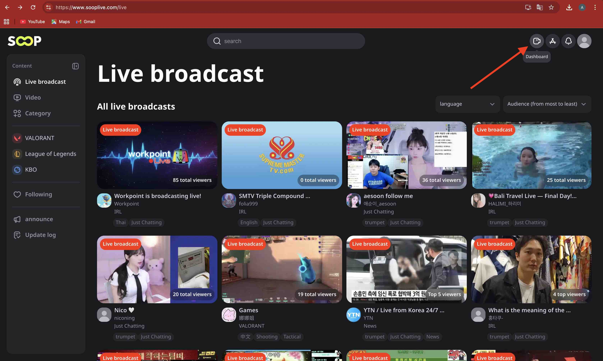
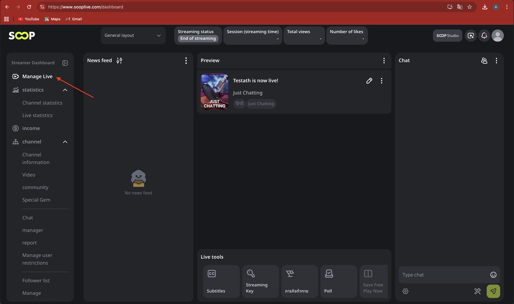
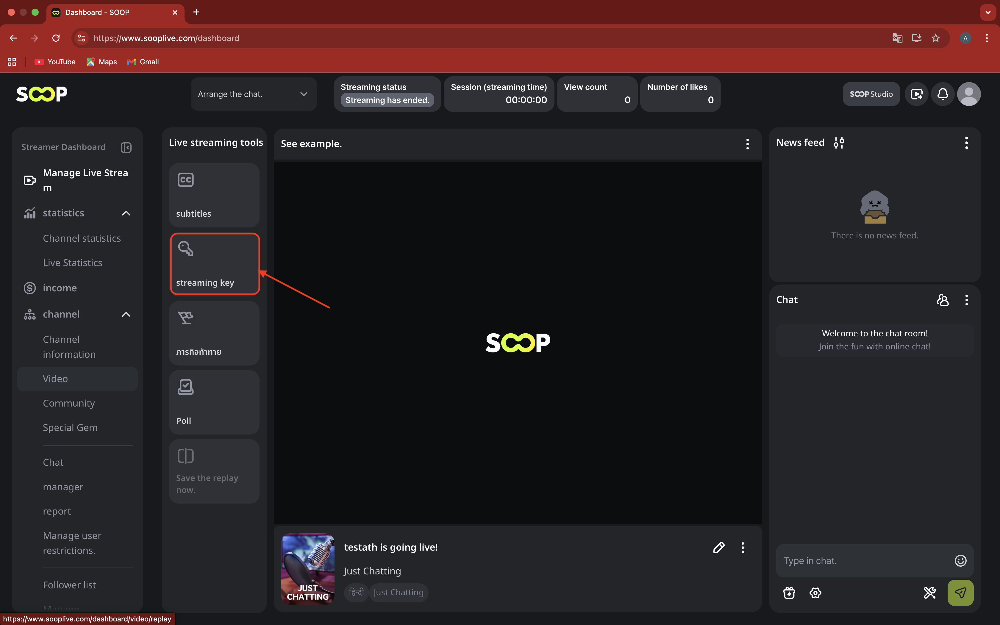
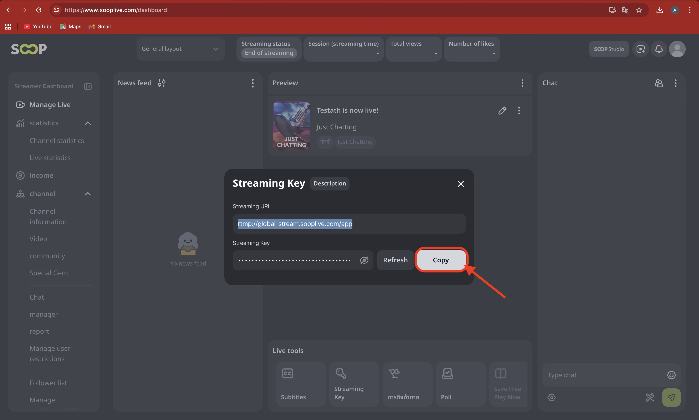
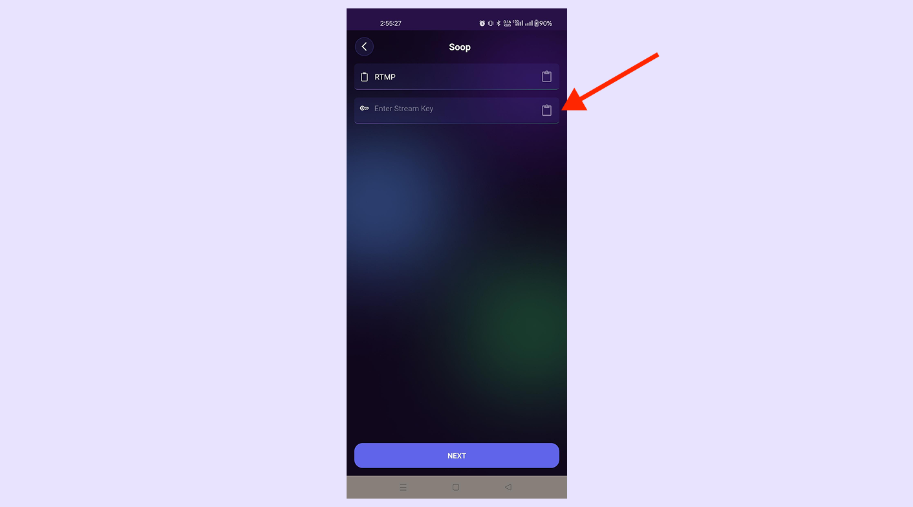

Open Soop, log in to your streaming account, click on Dashboard, and go to the dashboard page.
How to Stream Live on Soop
Welcome to Screen Recorder, let’s get started with a step-by-step guide to unlock your streaming potential.
Step 1: Go to Soop and login to your streaming account

Step 2: Click on Manage Live Streams
From the dashboard, click on Manage Live Streams to continue.

Step 3: Click Streaming Key to view stream details
Click on Streaming Key to view your Streaming URL and Streaming Key.

Step 4: Choose RTMP and copy Streaming URL & Key
Click Source Setup, choose RTMP, and copy the Streaming URL and Streaming Key.

Step 5: Paste URL and Streaming Key in the App
Paste the copied Streaming URL and Streaming Key into the app and start live streaming.
